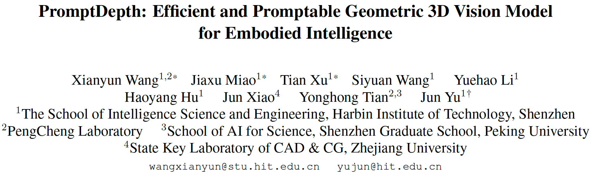
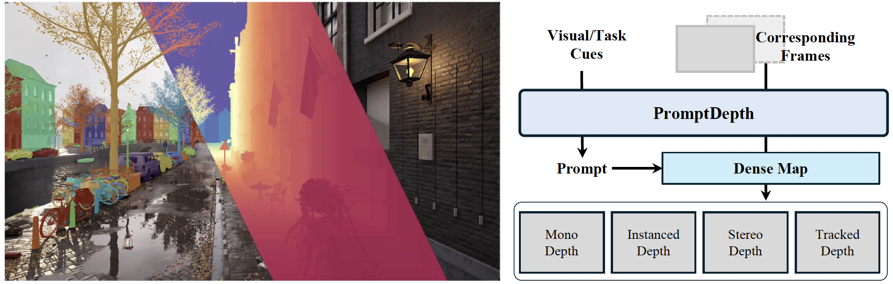
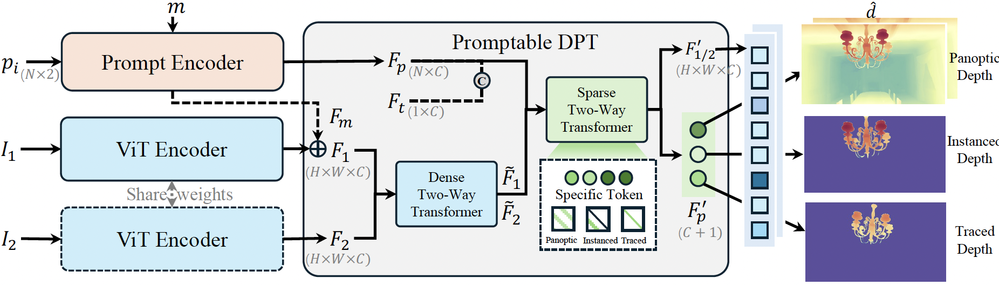
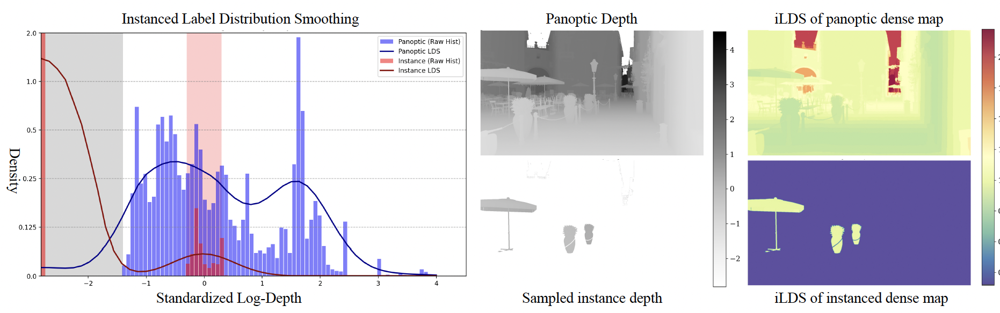
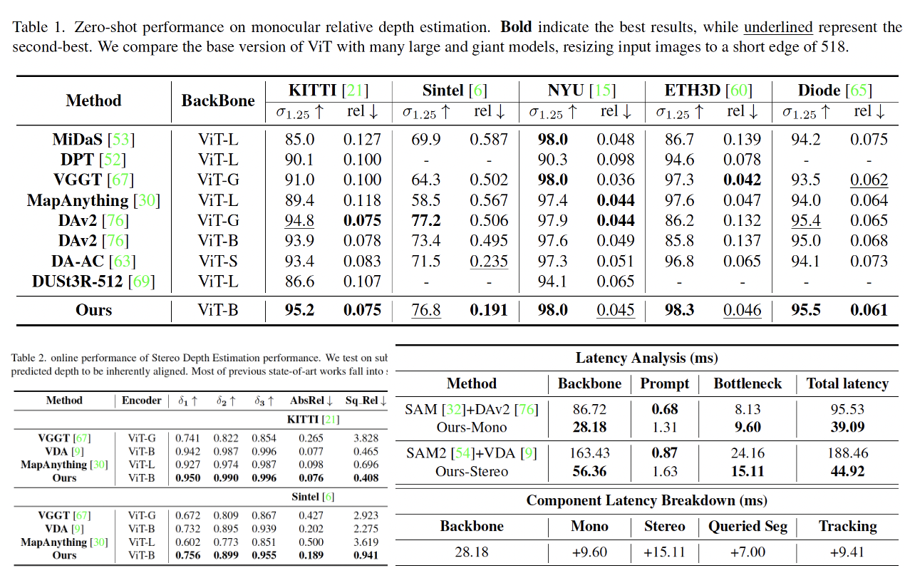
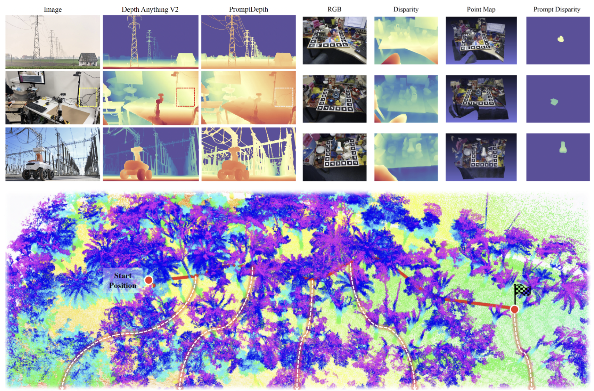
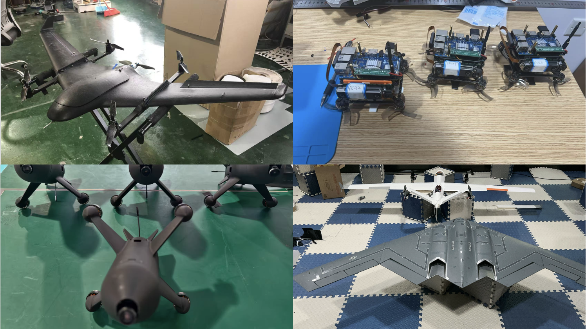

博士生王显赟的论文获 CVPR 2026 录用

📢 TL;DR： 我们提出了一种高效可提示交互视觉基础模型框架PromptDepth，旨在解决具身三维感知的低算力需求和几何-语义的单一任务受限等问题。该框架通过级联two-way transformer构建轻量化交互单元，设计出了灵活的多模态交互方法与，只通过单一解码器实现计算机视觉在几何感知与语义识别的统一。在ViT-Base架构模型达到甚至超越Large模型的水平，同时保证了视觉模型在空间感知语义理上的推理精准性和高效性。在单目深度、立体深度、目标追踪、提示分割等多任务评估测试集上达到SOTA效果。

2026年2月，计算机视觉顶会 CVPR 2026（IEEE/CVF Conference on Computer Vision and Pattern Recognition）录用论文名单正式公布。由哈尔滨工业大学（深圳）智能科学与工程学院多媒体智能前沿实验室（M3AIL Research Group）博士生王显赟（第一作者）在俞俊教授、苗嘉旭教授指导下完成的论文《PromptDepth: Efficient and Promptable Geometric 3D Vision Model for Embodied Intelligence》成功入选本届 CVPR 主会（Main Track）。该研究在计算机视觉与具身感知领域取得了重要突破。
研究亮点1：高效感知的提示交互模块与新型网络架构

本文提出了一种名为 PromptDepth 的前馈神经网络，专为具身系统实现高效的 3D 理解与交互而设计。该模型摒弃了冗余的多头解码器架构，采用统一的密集预测解码器，并创新性地设计了可提示的密集预测 Transformer（promptDPT）。其核心由一个级联双向 Transformer 构成：其中“密集块”负责潜在的几何对齐，“稀疏块”则负责处理各类视觉交互（如点或掩码提示）。这种新颖的架构允许模型在不增加额外计算开销的情况下，根据特定提示自适应地输出全景深度、实例深度或追踪深度图，完美契合了具身智能对实时推理和极简预测的需求。
研究亮点2：几何与语义全新的统一训练策略
在联合训练全景深度与实例深度时，模型面临着严重的标签分布不平衡与潜在的特征空间冲突。为了解决实例深度图中大量背景零分布带来的偏差，本文提出了一种新颖的实例标签分布平滑（ILDS）损失，通过计算深度频率为每张图生成自适应的平衡权重。此外，针对高级实例语义可能扭曲细粒度几何对应关系的问题，研究进一步引入了 Gram Anchoring 正则化。这种统一训练策略在保留几何图块相似性的同时，构建了鲁棒的实例特征表示，有效防止了模型在训练中途崩溃，从而实现了多任务性能的互相促进。

研究亮点3：逼真、对齐、大规模的离线渲染数据工程技术
鉴于现有数据集缺乏几何与实例感知完美对齐的样本，本文构建了一个高度灵活的大规模合成数据引擎。该数据管道利用虚幻引擎的影片渲染队列（MRQ），不仅能够离线渲染出高达 4K 分辨率的高保真逼真图像，还能同步生成像素级完美对齐的真实标签通道（如实例掩码、深度图、光流及相机位姿等）。借助该渲染工程技术，作者在 100 个不同的动态合成环境中，成功收集了包含超过 1000 万个独特物体实例的大规模数据集，为 3D 实例级视觉感知模型提供了极其宝贵的数据支撑。

实验结果：多项公开基准上的 SOTA 性能与高效推理
在多个深度估计基准数据集（如 KITTI、Sintel、NYU 等）上的系统评测表明，PromptDepth 展现了卓越的零样本泛化能力。相比于现有依赖庞大参数量（如 ViT-L 或 ViT-G）的视觉大模型，本方法仅依靠轻量级的网络架构便在单目与立体深度估计上实现了 SOTA 性能。实验结果进一步证明，该统一的密集预测架构能够有效消除冗余计算，在真实具身任务中，相比传统的“多专家组合”模型推理速度提升了两倍以上，成功实现了约 26 FPS 的实时高频感知。

团队优势：深耕具身智能与三维几何视觉
本研究由哈尔滨工业大学（深圳） M3L 实验室主导完成，充分展示了团队在具身智能（Embodied AI）、三维几何视觉理解 以及高速端到端自主无人系统控制等前沿方向的持续科研攻坚能力与深厚的技术积累。

未来展望：赋能高机动与高对抗的低空飞行智能体
PromptDepth 为计算资源受限的具身平台（如无人机系统）提供了极其高效、灵活的实时 3D 场景理解与实例级交互方案。未来，团队将进一步依托“AeroSeek”等软硬件结合的系统工程，探索该轻量级视觉基础模型在高速动态避障、端到端目标追踪与拦截等高动态飞行场景中的闭环应用，推动更具自主性、实时性与鲁棒性的低空具身智能体落地。
